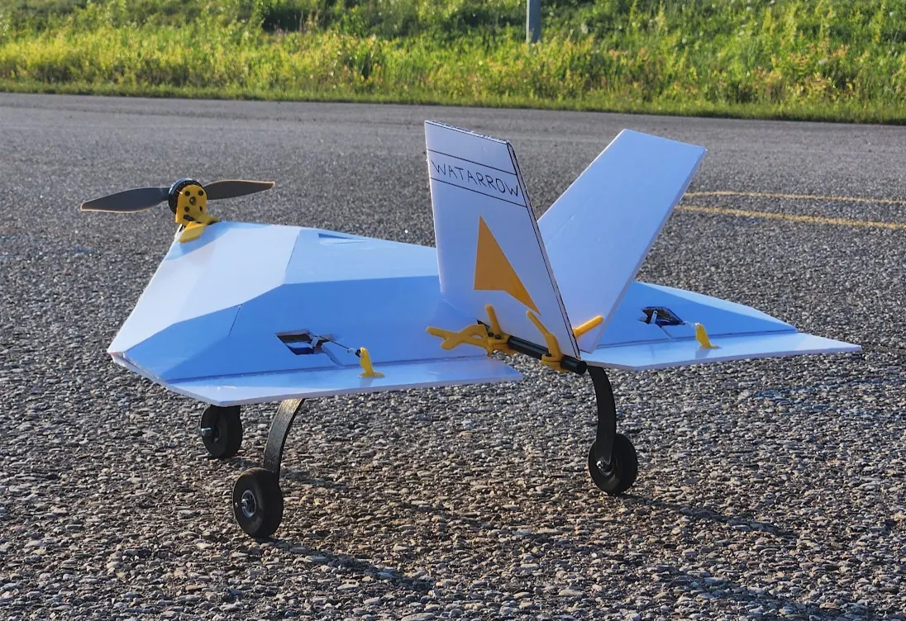
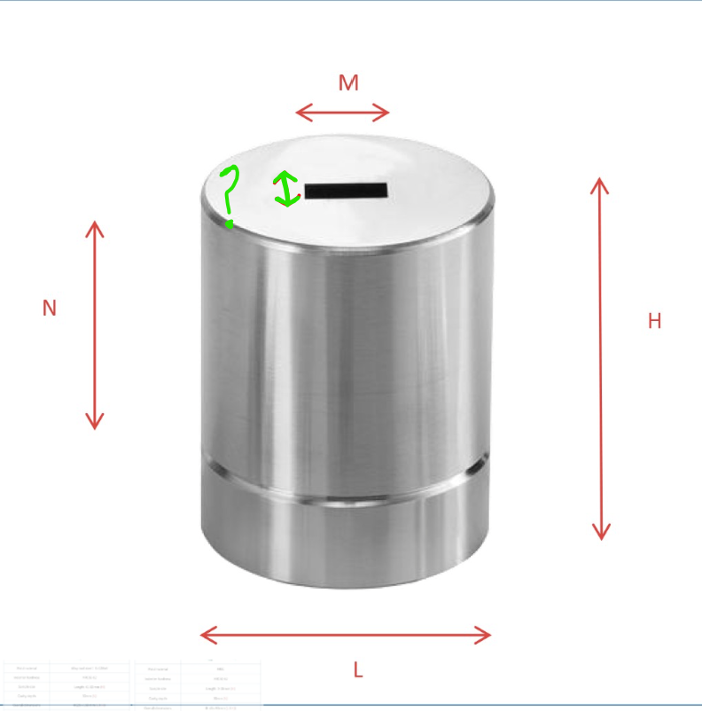
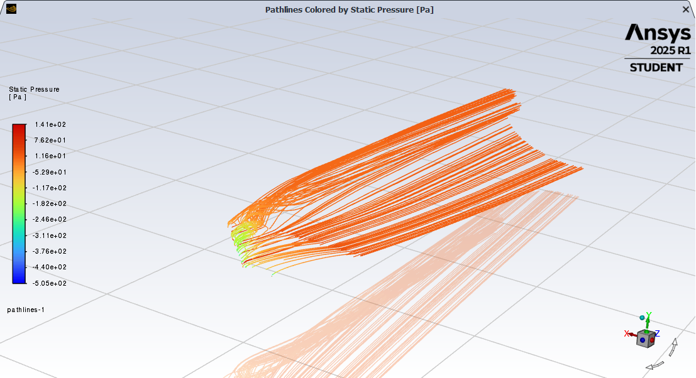
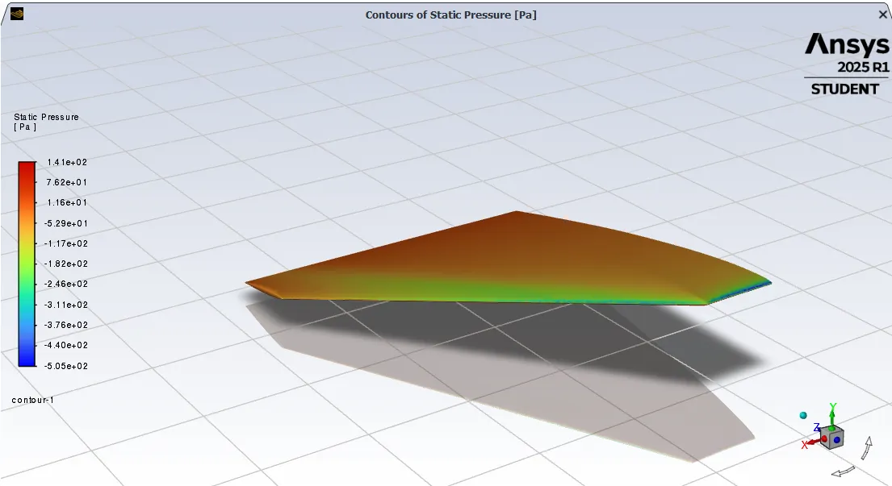
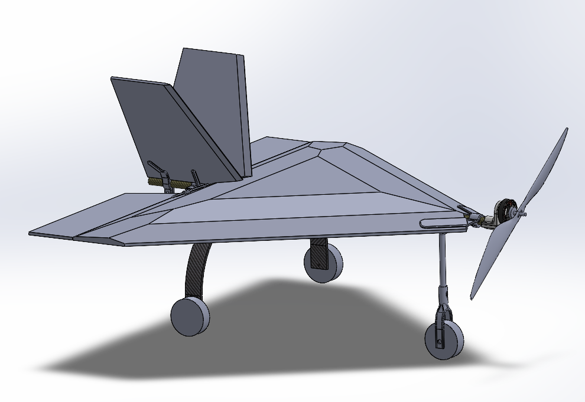
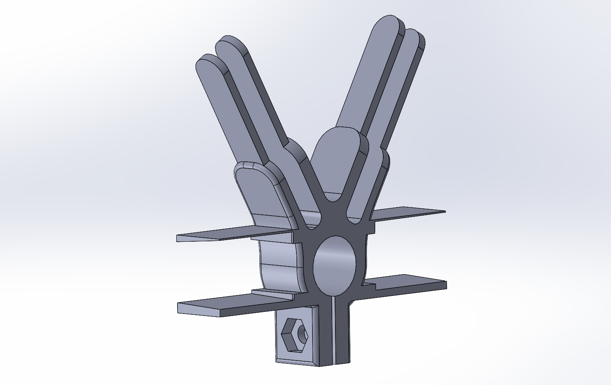
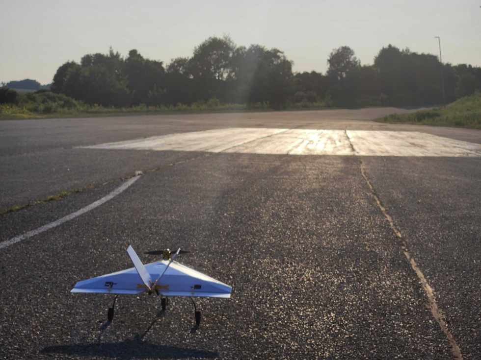

SAE 2026 Delta-Wing Aircraft

Overview
While serving as the Technical Lead for the WatArrow, I oversaw the development and flight testing of our first delta-wing aircraft prototype to compete in the Micro Class at SAE Aero Design 2026. This was a major project that involved lots of research, simulation, and design iteration. My contributions were primarily focused on CFD simulations and manufacturing.
CFD Simulations
A new skill I picked up through this project was learning how to conduct CFD simulations in Ansys Fluent. These simulations helped me rapidly iterate through multiple designs, before settling on one that had a good balance between aerodynamic characteristics and manufacturability. The three main designs I simulated were:
- Smooth lifting body
- Low-poly lifting body
- Sharp-edged flat plate
The figures below show the lift and drag curves for the 3 main designs, along with streamlines and pressure distribution for a blunt nose variant of the smooth lifting body.



Although the smooth lifting body had the best lift and drag performance (as expected), I chose to pursue the low-poly lifting body for our first prototype since it was much easier to manufacture.
Manufacturing
Before beginning fabrication, I made a complete assembly in SolidWorks to help verify component designs and tolerances.

One of the main goals was to make it very easy to swap out components, so I designed everything to be easily installed onto a central carbon fiber fuselage. This required me to design and 3D print numerous mounts, with an emphasis on reducing weight as much as possible. For example, I was able to combine the tail and rear wing mount into a single component with a compression clamp for the carbon fiber fuselage.

To improve aerodynamics, I designed the wing as a foamboard shell that covered all of the avionics components and batteries, rather than exposing them directly to the airflow. Lastly, I reused the carbon fiber landing gear I made for a previous project to keep the aircraft weight low.
Flight Testing
We were able to test this aircraft over multiple days, beginning with taxi tests and then building up to short flights. The lessons we learned informed the design of the second delta-wing design, which was a smooth lifting body made with the use of a CNC mill.
